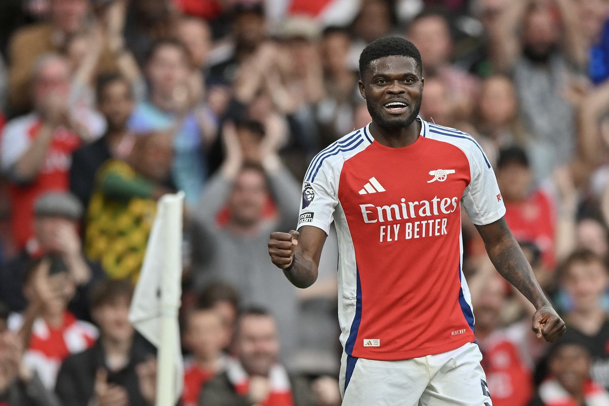

Thomas Partey
Carriera
Thomas Partey è un centrocampista ghanese nato nel 1993. Cresciuto calcisticamente in Spagna, è stato lanciato dall'Atlético Madrid sotto la guida di Diego Simeone, con cui ha vinto l'Europa League nel 2018. Le sue prestazioni a livello europeo lo hanno reso uno dei mediani più apprezzati in circolazione. Nell’ottobre del 2020 è stato acquistato dall’Arsenal, dove è diventato un punto di riferimento per l’equilibrio del centrocampo.
Stile di gioco e caratteristiche tecniche
Partey è un centrocampista difensivo completo, dotato di grande forza fisica, capacità di recupero palla e buona visione di gioco. È abile nel dettare i ritmi, gestire il possesso e rompere le linee avversarie con i suoi inserimenti o passaggi verticali. Ha un’ottima tecnica individuale ed è molto efficace anche in fase difensiva. La sua esperienza e il suo profilo tattico lo rendono un elemento fondamentale nello scacchiere di Arteta.